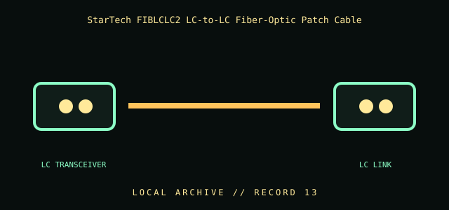

[ INDIVIDUAL COMPONENT // CABLES & ADAPTERS ]
StarTech FIBLCLC2 LC-to-LC Fiber-Optic Patch Cable
A local fiber patch lead with LC connectors at both ends, intended to interconnect compatible optical network equipment. Match fiber type, polish, transceiver wavelength, and polarity before deployment.

IDENTIFICATION / SAFETY: Match the complete part number, connector direction, host requirements, and revision to manufacturer documentation. A matching connector shape is not proof of protocol or electrical compatibility.
Specifications
| Catalog subcategory | Network and fiber cables |
|---|---|
| Catalog identity | StarTech.com FIBLCLC2 duplex LC-to-LC fiber-optic patch cable |
| Protocol / standard | StarTech model FIBLCLC2; LC-to-LC fiber-optic patch-cable family. The manufacturer identifies it as an LSZH-rated cable. The exact fiber grade, length, and optical loss must be read from the cable jacket or full SKU/revision documentation. |
| Connector ends | LC TRANSCEIVER → LC LINK; direction and gender are specified where the manufacturer source verifies them. |
Compatibility & electrical hazards
LC connector form alone does not identify single-mode versus multimode fiber, UPC versus APC polish, strand polarity, or supported wavelength. Match cable marking and transceiver specifications at both ends; never look into a live fiber or exceed the optical bend radius.
Archival & handling notes
Keep dust caps on both LC ends and store with a bend-safe coil. Record jacket markings, exact full part number, connector polish, and measured loss if tested; clean end faces with approved fiber tools before mating.
For collection records, photograph both connector faces and all labels; record manufacturer, complete SKU, revision, provenance, condition, and the source document used for identification. Do not apply power to an unidentified or damaged cable.
Sources & further reading
- StarTech — FIBLCLC2 LC fiber-optic patch cableManufacturer product family, connector type, and LSZH jacket information.
- Corning — Fiber optic connector care and cleaningManufacturer reference for fiber assembly handling and cleanliness.
Source values are limited to the linked manufacturer or standards documentation. Features not stated there are intentionally left unspecified; confirm the exact cable revision and host-device manuals before use.